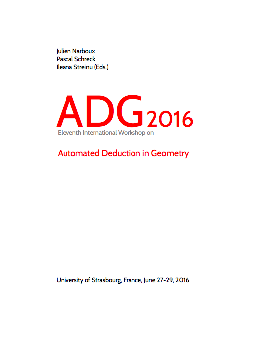

ADG 2016 - Strasbourg
Eleventh International Workshop
on
Automated Deduction in Geometry
June 27-29 2016
ADG is a forum to exchange ideas and views, to present research results and progress, and to demonstrate software tools on the intersection between geometry and automated deduction.
The previous ten workshops were held in Coimbra 2014, Edinburgh 2012, Munich 2010, Shanghaï 2008, Pontevedra 2006, Gainesville 2004, Linz 2002, Zurich 2000, Beijing 1998, and Toulouse 1996.
The eleventh workshop ADG 2016 took place in Strasbourg, France,

Proceedings
The informal proceedings are available on HAL open archive:

Post-Proceedings
We will invite authors of outstanding contributions to submit full articles for the post-proceedings, they will be published in Springer Lecture Notes in Computer Science / Lecture Notes in Artificial Intelligence.
Contact
adg2016@easychair.org